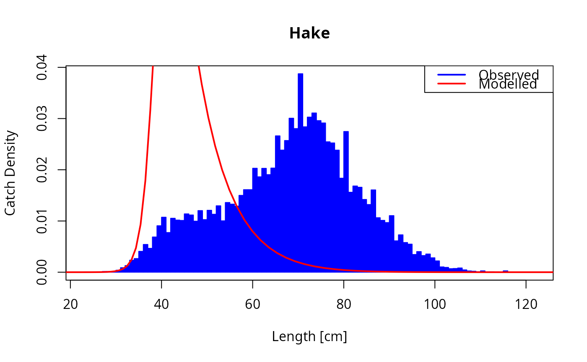

This function adjusts various model parameters for the selected species so that the model in steady state reproduces the observed catch size distribution, the observed yield and the observed production, if available.
Usage
matchCatch(
params,
species = NULL,
catch,
lambda = 2.05,
yield_lambda = 1,
production_lambda = 1
)Arguments
- params
A MizerParams object
- species
The species for which to match the catch. Optional. By default all target species are selected. A vector of species names, or a numeric vector with the species indices, or a logical vector indicating for each species whether it is to be selected (TRUE) or not.
- catch
A data frame containing the observed binned catch data. It must contain the following columns:
length: The start of each bin.dl: The width of each bin.count: The observed count for each bin.
- lambda
The slope of the community spectrum. Default is 2.05.
- yield_lambda
A parameter that controls the strength of the penalty for deviation from the observed yield.
- production_lambda
A parameter that controls the strength of the penalty for deviation from the observed production.
Value
A MizerParams object with the adjusted external mortality, gear selectivity, catchability and steady-state spectrum for the selected species.
Details
Currently this function is implemented only for the case where there is a single gear catching each species.
The function sets new values for the following parameters:
l50: The size at which the gear selectivity is 50%.l25: The size at which the gear selectivity is 25%.catchability: The catchability of the gear.mu_mat: The external mortality at maturity.
Only the parameters of the selected species are adjusted. The function then recalculates the corresponding rate arrays in the params object. It sets the initial size spectrum to the steady state size spectrum. The total biomass of each species remains unchanged.
The function estimates these parameters by minimizing an objective function.
The objective function is the negative log likelihood of the observed catch
size distribution given the probabilities predicted by the model plus the sum
of squares difference between the log of the observed yield and the log of
the predicted yield, multiplied by yield_lambda, as well as the sum of
squares difference between the log of the observed production and the log of
the predicted production, multiplied by production_lambda.
The function deals with missing data in the following way, for each species individually:
If the observed yield is not available, the function will only match the observed catch size distribution and the observed production.
If the observed production is not available, the function will only match the observed catch size distribution and the observed yield.
If the observed catch size distribution is not available, the function will only match the observed yield and the observed production.
If neither the observed yield nor the observed production are available, the function raises an error.
The catch predicted by the model is calculated by integrating the catchability and the gear selectivity over the size distribution of the species. The size distribution itself is shaped by the model through the interplay between growth and mortality. This is why the gear selectivity and catchability need to be adjusted together with the other parameters that shape the size distribution.
The objective function is coded in C++ and the TMB package is used to compile
the objective function and to create functions for automatically calculating
the gradients. These are then passed to the nlminb function to minimize the
objective function.
See also
Other match functions:
matchConsumption(),
matchDiet(),
matchExtMortOnce(),
matchGonadicProportionOnce(),
matchProduction(),
matchRespirationOnce()
Examples
params <- matchCatch(celtic_params, species = "Hake", catch = celtic_catch)
plot_catch(params, species = "Hake", catch = celtic_catch)

# The function leaves the biomass of the species unchanged
all.equal(getBiomass(params), getBiomass(celtic_params), tol = 1e-4)
#> [1] TRUE
# It also leaves the energy available to an individual for reproduction
# and growth unchanged
all.equal(getEReproAndGrowth(params), getEReproAndGrowth(celtic_params))
#> [1] TRUE
# The initial size spectrum is set to the steady state size spectrum
params_steady <- steadySingleSpecies(params)
all.equal(initialN(params), initialN(params_steady))
#> [1] TRUE